Project Idea
This app is to help with two problems: Where can I meet new friends? Where can I find good food?
The app connects food lovers, giving them the opportunity to get to know each other better. Instead of writing, "Hi, I would like to meet you. Can you tell me about yourself?" you can say, "Hi! I’d also like to visit this coffee shop. Why don’t we go together?"
+ Additionally, since the meeting places are local establishments, the app also caters to business owners by offering opportunities to advertise and attract new customers.
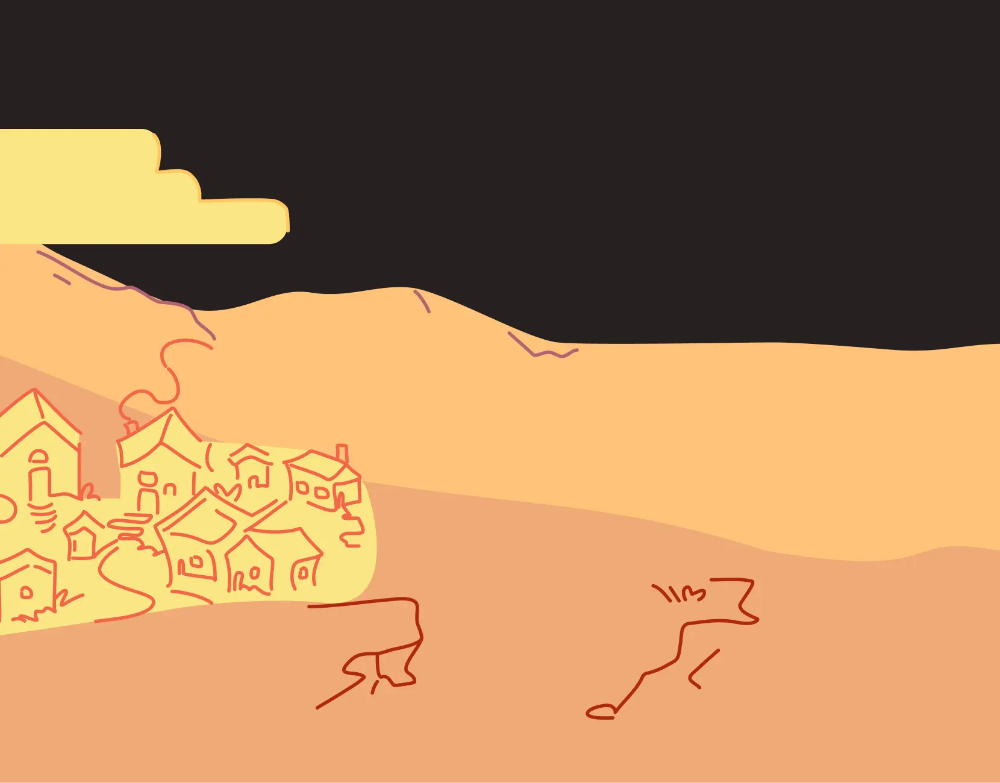
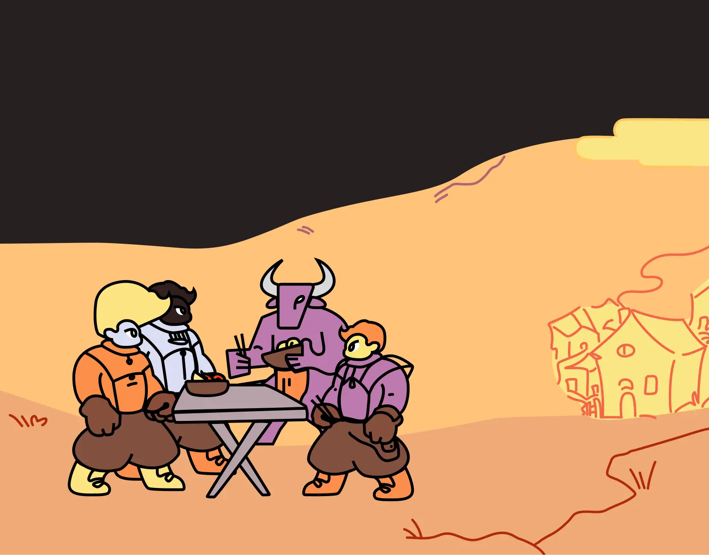
Research
I aimed to create a community-focused application that brings people together through their shared love of gastronomy. To achieve this, I analyzed and modeled scenarios involving communication between individuals and businesses, as well as businesses and their customers.
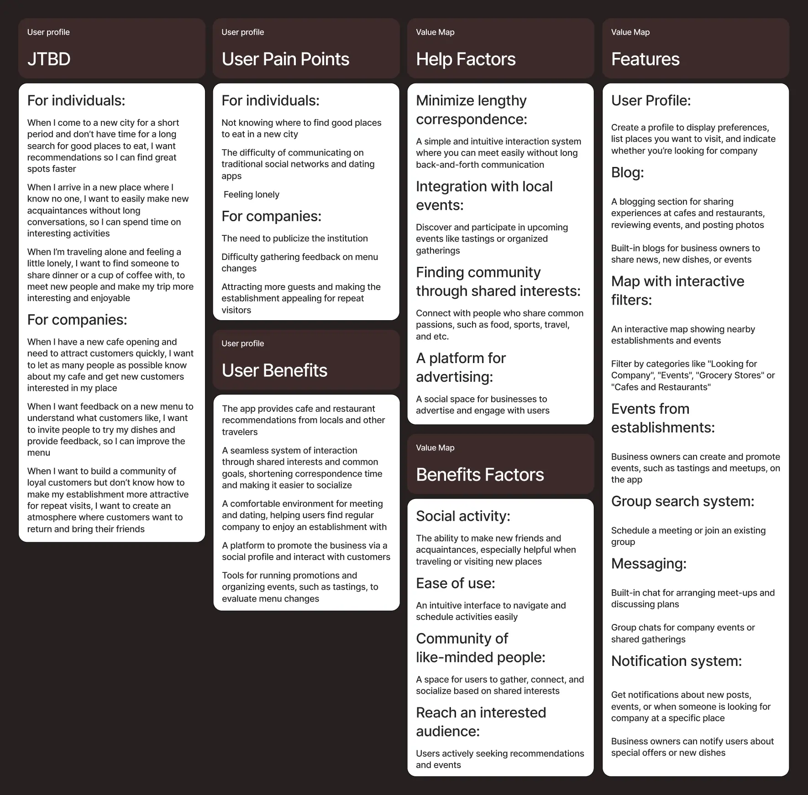
Concept
A game-format adventure featuring adventurers, bosses, and quests.
I wanted to create a brand that evokes the atmosphere of a cozy adventure. When I think of a gastronomic journey, I imagine a warm, bustling tavern where an adventurer arrives after a long journey. That’s why I chose to base the concept on a game format and reflect it in the brand identity.
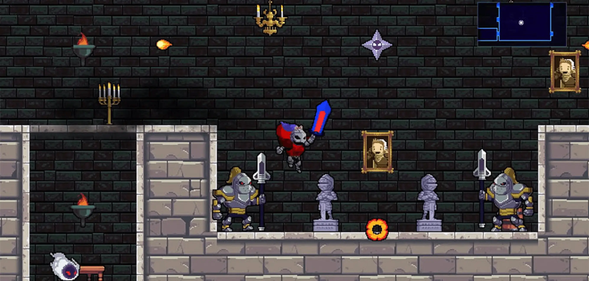
Identity Elements
The fonts maintain a modern, minimalist interface while ensuring excellent readability. The color palette combines warmth and friendliness with soft, inviting shades, while contrasting bright elements add a sense of adventure and creativity.
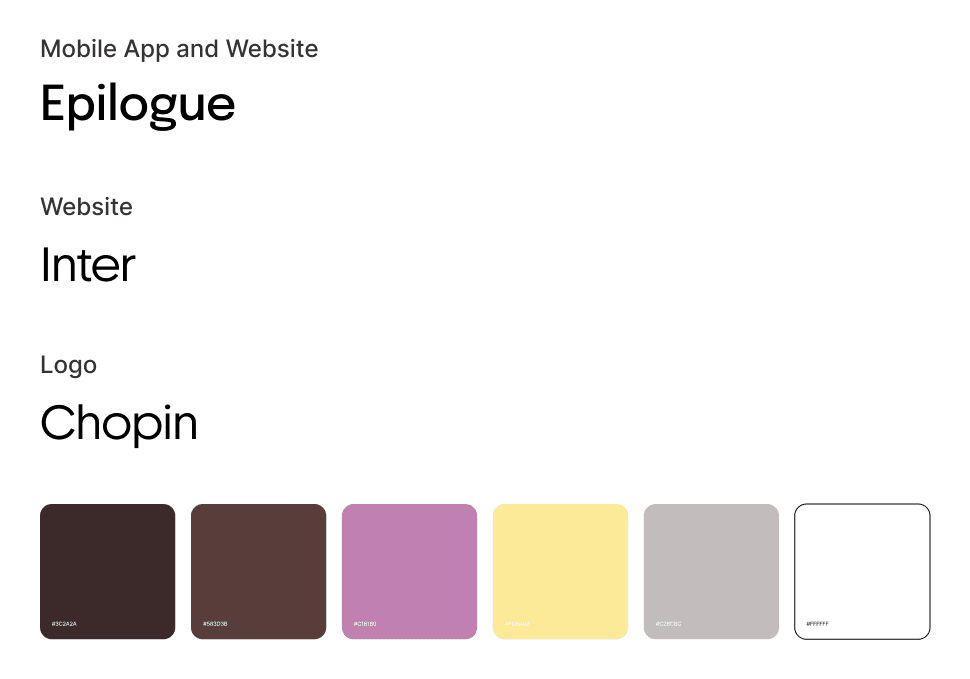
The name and logo are simple in structure. The logo as well as the name consists of two words, the combination of the first letters of the two words resembles a view of the road from above, which from different points leads to one quest.
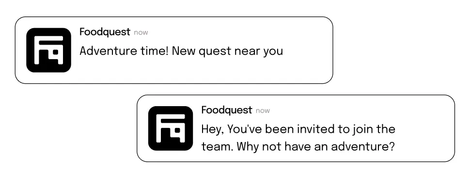
The characters themselves are similar in appearance to the characters in platformer games. The average user is depicted as an adventurer, and the company owner as a game boss.
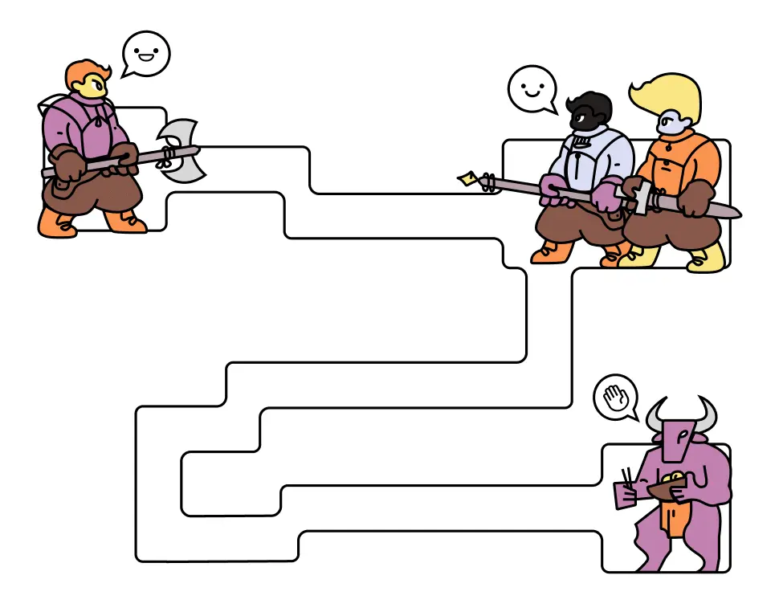
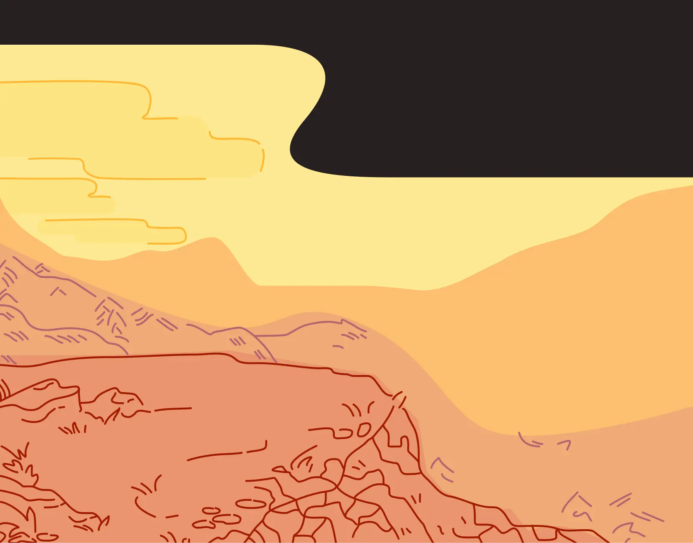
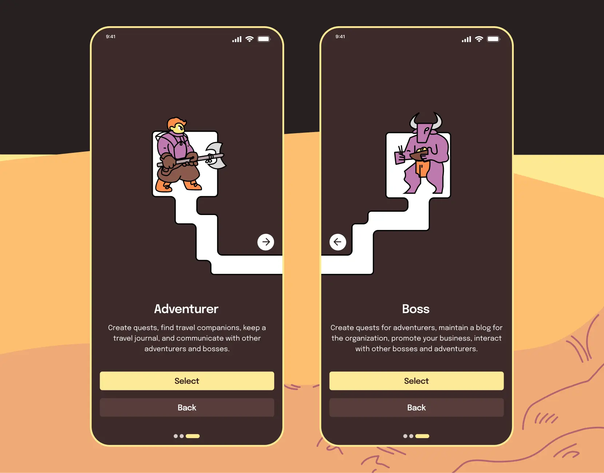
User Flow
I identified the user’s steps and the main actions they take on the different screens of the application. It turned out that despite the two types of users, their user flow is the same. However, there are differences in the use of functions and their frequency.
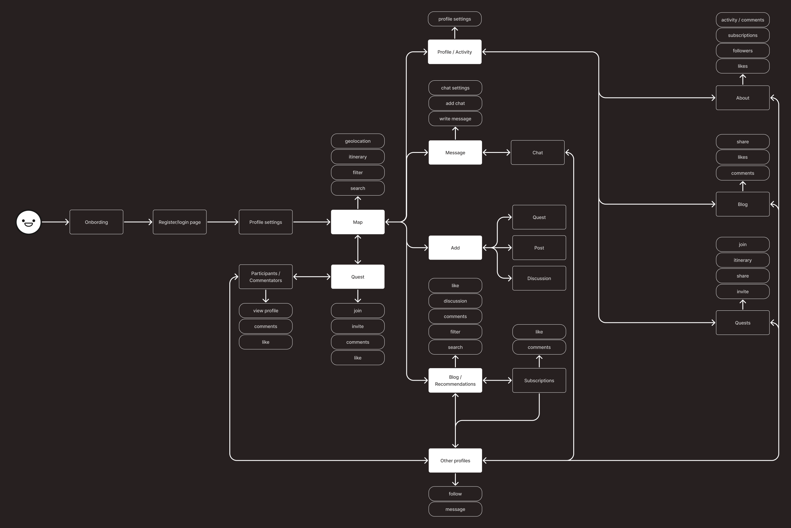
App Screens
I designed the screens in a dark color theme using colors from the identity. But the app also has the more familiar standard dark and light themes.
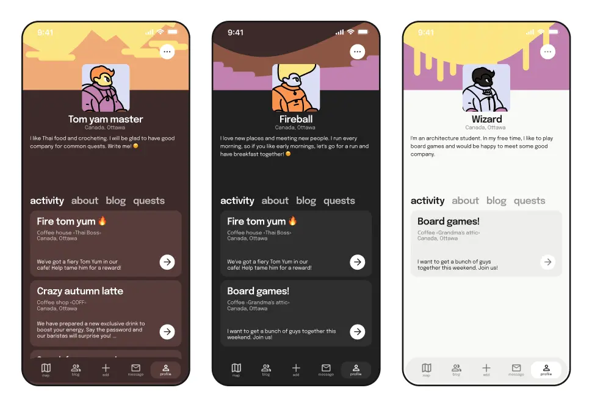
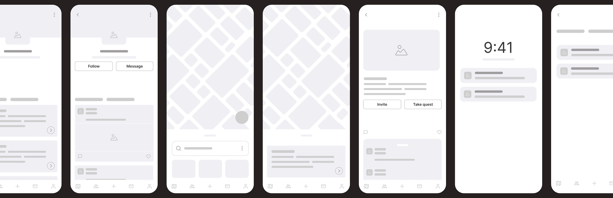
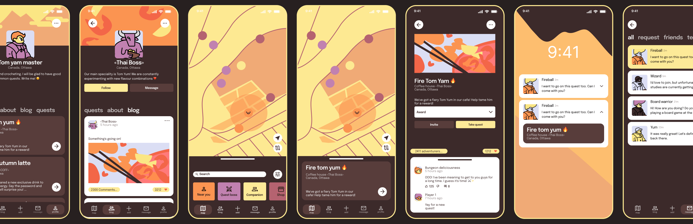
Landing Page
I created a landing page whose target action is to get the user to download the app. I also have a repository on GitHub where I tested the adaptability of some layout elements for different resolutions. It's not a finished site, but more of a platform for testing how certain layout design decisions work.
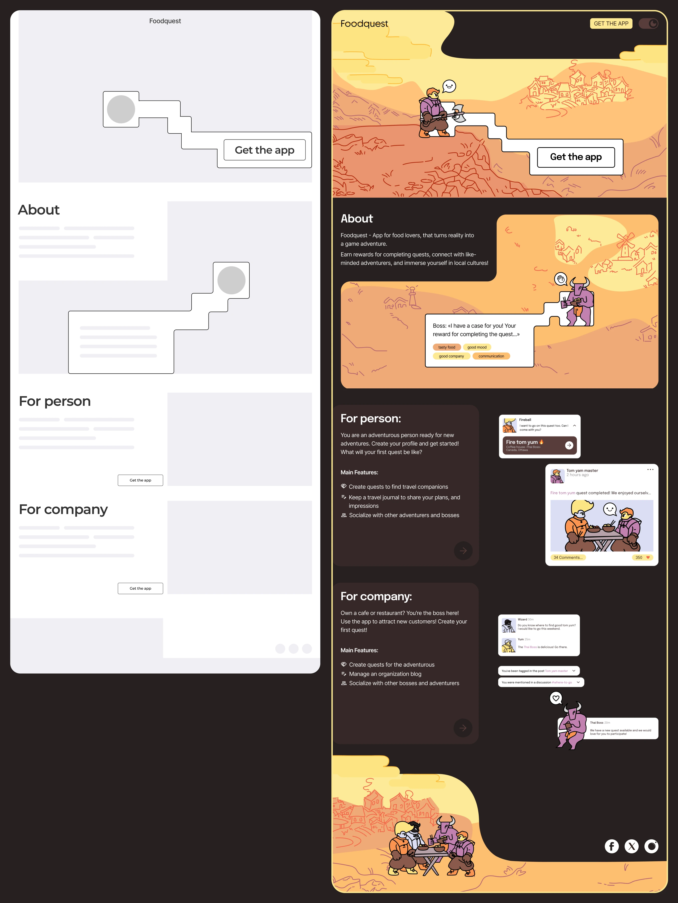